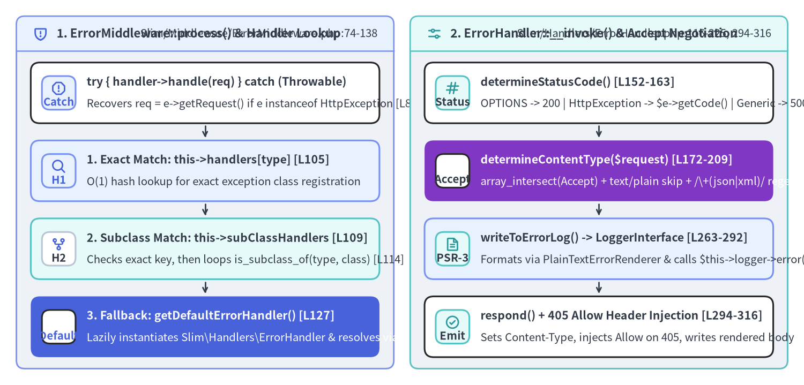
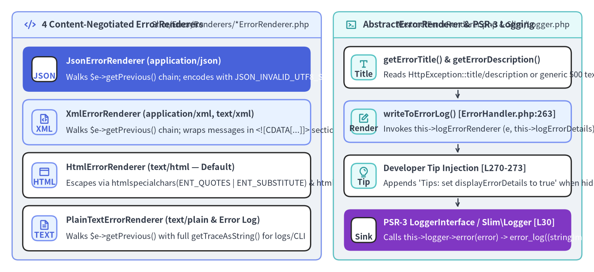

ErrorMiddleware, ErrorHandler & Content-Negotiated Renderers Internals
Slim 4 treats exception handling as a first-class, content-negotiated PSR-15 subsystem spanning 7 source files (416 LOC): Slim\Middleware\ErrorMiddleware (Slim/Middleware/ErrorMiddleware.php), Slim\Handlers\ErrorHandler (Slim/Handlers/ErrorHandler.php), Slim\Error\AbstractErrorRenderer (Slim/Error/AbstractErrorRenderer.php), the four concrete renderers under Slim\Error\Renderers\* (Html, Json, PlainText, Xml), and the PSR-3 fallback Slim\Logger (Slim/Logger.php).

Source Code
from drawlib.canvas import save, setup
from drawlib.icons import phosphor
from drawlib.smartarts import CardList, Panel
from drawlib.styles import Colors, Styles
setup(width=196, height=94, dpi=150)
# Left Panel: ErrorMiddleware Interception & 4-Tier Handler Resolution
p_left = Panel(
"1. ErrorMiddleware::process() & Handler Lookup",
"Slim/Middleware/ErrorMiddleware.php:74-138",
style=Styles.Neutral.patch(shape_r=2.0),
header_style=Styles.PrimaryNeutral.patch(shape_line_width=1.2),
text_style=Styles.DarkBold.patch(text_size=10.8),
description_style=Styles.Dark.patch(text_size=9.8),
icon=phosphor.shield_warning,
icon_style=Styles.PrimaryBold,
header_variant="filled",
header_height=8.5,
)
p_left.draw((4.0, 4.0), width=92.0, height=86.0)
lx, lw, lh = p_left.get_content_box((4.0, 4.0), width=92.0, height=86.0, padding=(3.5, 2.8))
em_steps = CardList(
style=Styles.White,
text_style=Styles.DarkBold.patch(text_size=10.2),
description_style=Styles.Dark.patch(text_size=9.8),
badge_shape="rounded_rect",
badge_style=Styles.PrimaryNeutral,
badge_text_style=Styles.PrimaryBold.patch(text_size=9.8),
icon_style=Styles.PrimaryBold,
direction="vertical",
spacing=2.5,
show_arrows=True,
arrow_style=Styles.DarkBold.patch(line_arrow_head_scale=10, line_width=1.3),
)
em_steps.add(
"try { handler->handle(req) } catch (Throwable)",
"Recovers req = e->getRequest() if e instanceof HttpException [L85]",
badge_text="Catch",
icon=phosphor.warning_octagon,
)
em_steps.add(
"1. Exact Match: this->handlers[type] [L105]",
"O(1) hash lookup for exact exception class registration",
badge_text="H1",
icon=phosphor.magnifying_glass,
style=Styles.PrimaryNeutral,
)
em_steps.add(
"2. Subclass Match: this->subClassHandlers [L109]",
"Checks exact key, then loops is_subclass_of(type, class) [L114]",
badge_text="H2",
icon=phosphor.git_fork,
style=Styles.SecondaryNeutral,
badge_style=Styles.White.patch(shape_line_color=Colors.Gray4),
badge_text_style=Styles.DarkBold.patch(text_size=9.8),
)
em_steps.add(
"3. Fallback: getDefaultErrorHandler() [L127]",
"Lazily instantiates Slim\\Handlers\\ErrorHandler & resolves via DI",
badge_text="Default",
icon=phosphor.shield_check,
style=Styles.PrimaryFlat,
text_style=Styles.WhiteBold.patch(text_size=10.2),
description_style=Styles.White.patch(text_size=9.8),
badge_style=Styles.White,
badge_text_style=Styles.PrimaryBold.patch(text_size=9.8),
icon_style=Styles.WhiteBold,
)
em_steps.draw(xy=lx, width=lw, height=lh)
# Right Panel: ErrorHandler::__invoke() Status, Logging & Accept Negotiation
p_right = Panel(
"2. ErrorHandler::__invoke() & Accept Negotiation",
"Slim/Handlers/ErrorHandler.php:116-225, 294-316",
style=Styles.Neutral.patch(shape_r=2.0),
header_style=Styles.SecondaryNeutral.patch(shape_line_width=1.2),
text_style=Styles.DarkBold.patch(text_size=10.8),
description_style=Styles.Dark.patch(text_size=9.8),
icon=phosphor.sliders_horizontal,
icon_style=Styles.SecondaryBold,
header_variant="filled",
header_height=8.5,
)
p_right.draw((100.0, 4.0), width=92.0, height=86.0)
rx, rw, rh = p_right.get_content_box((100.0, 4.0), width=92.0, height=86.0, padding=(3.5, 2.8))
eh_steps = CardList(
style=Styles.White,
text_style=Styles.DarkBold.patch(text_size=10.2),
description_style=Styles.Dark.patch(text_size=9.8),
badge_shape="rounded_rect",
badge_style=Styles.SecondaryNeutral,
badge_text_style=Styles.DarkBold.patch(text_size=9.8),
icon_style=Styles.SecondaryBold,
direction="vertical",
spacing=2.5,
show_arrows=True,
arrow_style=Styles.DarkBold.patch(line_arrow_head_scale=10, line_width=1.3),
)
eh_steps.add(
"determineStatusCode() [L152-163]",
"OPTIONS -> 200 | HttpException -> $e->getCode() | Generic -> 500",
badge_text="Status",
icon=phosphor.hash,
)
eh_steps.add(
"determineContentType($request) [L172-209]",
"array_intersect(Accept) + text/plain skip + /\\+(json|xml)/ regex",
badge_text="Accept",
icon=phosphor.funnel,
style=Styles.AccentFlat,
text_style=Styles.WhiteBold.patch(text_size=10.2),
description_style=Styles.White.patch(text_size=9.8),
badge_style=Styles.White,
badge_text_style=Styles.DarkBold.patch(text_size=9.8),
icon_style=Styles.WhiteBold,
)
eh_steps.add(
"writeToErrorLog() -> LoggerInterface [L263-292]",
"Formats via PlainTextErrorRenderer & calls $this->logger->error()",
badge_text="PSR-3",
icon=phosphor.file_text,
style=Styles.PrimaryNeutral,
)
eh_steps.add(
"respond() + 405 Allow Header Injection [L294-316]",
"Sets Content-Type, injects Allow on 405, writes rendered body",
badge_text="Emit",
icon=phosphor.check_circle,
)
eh_steps.draw(xy=rx, width=rw, height=lh)
save()
1. ErrorMiddleware: Exception Boundary & Handler Resolution
When registered last via $app->addErrorMiddleware($displayErrorDetails, $logErrors, $logErrorDetails, $logger) (Slim/App.php:145-161), ErrorMiddleware sits at the outermost shell of MiddlewareDispatcher::$tip.
process(), handleException() & getErrorHandler() (Slim/Middleware/ErrorMiddleware.php:74-120)
// Slim/Middleware/ErrorMiddleware.php:74-120
public function process(ServerRequestInterface $request, RequestHandlerInterface $handler): ResponseInterface
{
try {
return $handler->handle($request);
} catch (Throwable $e) {
return $this->handleException($request, $e);
}
}
public function handleException(ServerRequestInterface $request, Throwable $exception): ResponseInterface
{
if ($exception instanceof HttpException) {
$request = $exception->getRequest();
}
$exceptionType = get_class($exception);
$handler = $this->getErrorHandler($exceptionType);
/** @var ResponseInterface */
return $handler($request, $exception, $this->displayErrorDetails, $this->logErrors, $this->logErrorDetails);
}
When getErrorHandler(string $type) (lines 103–120) looks up a handler for $exceptionType = get_class($exception), it evaluates four tiers of specificity before resolving the matched handler through $this->callableResolver->resolve(...):
- Exact Class Registry (
isset($this->handlers[$type]), line 105): Populated whensetErrorHandler($type, $handler, false)is called (the default$handleSubclasses = false). - Exact Key in Subclass Registry (
isset($this->subClassHandlers[$type]), line 109): Fast $O(1)$ hit if$typeitself was registered with$handleSubclasses = true. - Polymorphic Parent Scan (
is_subclass_of($type, $class), lines 113–117): Iterates$this->subClassHandlersand checksis_subclass_of($type, $class). For example, registeringsetErrorHandler(HttpSpecializedException::class, $myHandler, true)catches all 9 HTTP status exceptions (400–501). - Default
ErrorHandlerFallback (getDefaultErrorHandler(), lines 119, 127–138): Lazily constructsnew ErrorHandler($this->callableResolver, $this->responseFactory, $this->logger).
2. ErrorHandler::__invoke(): Status Codes, Allow Headers & Accept Negotiation
Why determineStatusCode() Returns 200 for OPTIONS (Slim/Handlers/ErrorHandler.php:152-163)
// Slim/Handlers/ErrorHandler.php:152-163
protected function determineStatusCode(): int
{
if ($this->method === 'OPTIONS') {
return 200;
}
if ($this->exception instanceof HttpException) {
return $this->exception->getCode();
}
return 500;
}
Why does an unhandled exception during an OPTIONS request return HTTP 200? When a browser sends a CORS preflight OPTIONS /api/users request and the application has only registered $app->get('/api/users', ...) and $app->post('/api/users', ...) without an explicit $app->options(...) route, RoutingMiddleware throws HttpMethodNotAllowedException (405) carrying getAllowedMethods() = ['GET', 'POST']. By returning 200 on OPTIONS while still injecting the Allow: GET, POST header in respond() (lines 303–306), ErrorHandler allows CORS middlewares wrapping ErrorMiddleware to complete preflight responses cleanly!
Accept Header Content Negotiation (Slim/Handlers/ErrorHandler.php:172-209)
Unless forceContentType() (lines 146–150) has locked $this->isContentTypeForced = true, determineContentType(ServerRequestInterface $request) negotiates the response MIME type against the five keys of $this->errorRenderers ('application/json', 'application/xml', 'text/xml', 'text/html', 'text/plain'):
// Slim/Handlers/ErrorHandler.php:172-209
protected function determineContentType(ServerRequestInterface $request): ?string
{
$acceptHeader = $request->getHeaderLine('Accept');
$selectedContentTypes = array_intersect(
explode(',', $acceptHeader),
array_keys($this->errorRenderers)
);
$count = count($selectedContentTypes);
if ($count) {
$current = current($selectedContentTypes);
if ($current === 'text/plain' && $count > 1) {
$next = next($selectedContentTypes);
if (is_string($next)) {
return $next;
}
}
if (is_string($current)) {
return $current;
}
}
if (preg_match('/\+(json|xml)/', $acceptHeader, $matches)) {
$mediaType = 'application/' . $matches[1];
if (array_key_exists($mediaType, $this->errorRenderers)) {
return $mediaType;
}
}
return null;
}
Notice the three negotiation rules:
- Exact Comma-Split Intersection (lines 175–178): Computes
array_intersect(explode(',', $acceptHeader), array_keys($this->errorRenderers)). - De-Prioritizing
text/plain(lines 188–193): If a client sendsAccept: text/plain,application/json($count > 1with'text/plain'first),ErrorHandleradvances tonext($selectedContentTypes)('application/json') so structured formats take precedence over plain text. - Structured Suffix Regex (
/\+(json|xml)/, lines 201–206): Matches RFC 6839 vendor/problem media types (such asapplication/problem+json,application/vnd.api+json, orapplication/atom+xml) and maps them to'application/json'or'application/xml'. If nothing matches, it returnsnullanddetermineRenderer()falls back to$this->defaultErrorRenderer(HtmlErrorRenderer::class,'text/html').
3. AbstractErrorRenderer, Exception Chain Traversal & PSR-3 Logging

Source Code
from drawlib.canvas import save, setup
from drawlib.icons import phosphor
from drawlib.smartarts import CardList, Panel
from drawlib.styles import Colors, Styles
setup(width=196, height=90, dpi=150)
# Left Panel: 4 Built-In Error Renderers
p_left = Panel(
"4 Content-Negotiated ErrorRenderers",
"Slim/Error/Renderers/*ErrorRenderer.php",
style=Styles.Neutral.patch(shape_r=2.0),
header_style=Styles.PrimaryNeutral.patch(shape_line_width=1.2),
text_style=Styles.DarkBold.patch(text_size=10.8),
description_style=Styles.Dark.patch(text_size=9.8),
icon=phosphor.code,
icon_style=Styles.PrimaryBold,
header_variant="filled",
header_height=8.5,
)
p_left.draw((4.0, 4.0), width=102.0, height=82.0)
lx, lw, lh = p_left.get_content_box((4.0, 4.0), width=102.0, height=82.0, padding=(3.5, 3.0))
ren_list = CardList(
style=Styles.White,
text_style=Styles.DarkBold.patch(text_size=10.2),
description_style=Styles.Dark.patch(text_size=9.8),
badge_shape="rounded_rect",
badge_style=Styles.PrimaryNeutral,
badge_text_style=Styles.PrimaryBold.patch(text_size=9.8),
icon_style=Styles.PrimaryBold,
direction="vertical",
spacing=2.6,
)
ren_list.add(
"JsonErrorRenderer (application/json)",
"Walks $e->getPrevious() chain; encodes with JSON_INVALID_UTF8_SUBSTITUTE",
badge_text="JSON",
icon=phosphor.brackets_curly,
style=Styles.PrimaryFlat,
text_style=Styles.WhiteBold.patch(text_size=10.2),
description_style=Styles.White.patch(text_size=9.8),
badge_style=Styles.White,
badge_text_style=Styles.PrimaryBold.patch(text_size=9.8),
icon_style=Styles.WhiteBold,
)
ren_list.add(
"XmlErrorRenderer (application/xml, text/xml)",
"Walks $e->getPrevious() chain; wraps messages in <![CDATA[...]]> sections",
badge_text="XML",
icon=phosphor.file_code,
style=Styles.PrimaryNeutral,
)
ren_list.add(
"HtmlErrorRenderer (text/html — Default)",
"Escapes via htmlspecialchars(ENT_QUOTES | ENT_SUBSTITUTE) & htmlentities()",
badge_text="HTML",
icon=phosphor.browser,
)
ren_list.add(
"PlainTextErrorRenderer (text/plain & Error Log)",
"Walks $e->getPrevious() with full getTraceAsString() for logs/CLI",
badge_text="TEXT",
icon=phosphor.file_text,
)
ren_list.draw(xy=lx, width=lw, height=lh)
# Right Panel: AbstractErrorRenderer & PSR-3 Logger Pipeline
p_right = Panel(
"AbstractErrorRenderer & PSR-3 Logging",
"AbstractErrorRenderer.php & Slim/Logger.php",
style=Styles.Neutral.patch(shape_r=2.0),
header_style=Styles.SecondaryNeutral.patch(shape_line_width=1.2),
text_style=Styles.DarkBold.patch(text_size=10.8),
description_style=Styles.Dark.patch(text_size=9.8),
icon=phosphor.terminal_window,
icon_style=Styles.SecondaryBold,
header_variant="filled",
header_height=8.5,
)
p_right.draw((110.0, 4.0), width=82.0, height=82.0)
rx, rw, rh = p_right.get_content_box((110.0, 4.0), width=82.0, height=82.0, padding=(3.5, 3.0))
log_list = CardList(
style=Styles.White,
text_style=Styles.DarkBold.patch(text_size=10.2),
description_style=Styles.Dark.patch(text_size=9.8),
badge_shape="rounded_rect",
badge_style=Styles.SecondaryNeutral,
badge_text_style=Styles.DarkBold.patch(text_size=9.8),
icon_style=Styles.SecondaryBold,
direction="vertical",
spacing=2.6,
show_arrows=True,
arrow_style=Styles.DarkBold.patch(line_arrow_head_scale=10, line_width=1.3),
)
log_list.add(
"getErrorTitle() & getErrorDescription()",
"Reads HttpException::title/description or generic 500 text",
badge_text="Title",
icon=phosphor.text_t,
)
log_list.add(
"writeToErrorLog() [ErrorHandler.php:263]",
"Invokes this->logErrorRenderer (e, this->logErrorDetails)",
badge_text="Render",
icon=phosphor.note_pencil,
style=Styles.PrimaryNeutral,
)
log_list.add(
"Developer Tip Injection [L270-273]",
"Appends 'Tips: set displayErrorDetails to true' when hidden",
badge_text="Tip",
icon=phosphor.lightbulb,
)
log_list.add(
"PSR-3 LoggerInterface / Slim\\Logger [L30]",
"Calls this->logger->error(error) -> error_log((string)msg)",
badge_text="Sink",
icon=phosphor.broadcast,
style=Styles.AccentFlat,
text_style=Styles.WhiteBold.patch(text_size=10.2),
description_style=Styles.White.patch(text_size=9.8),
badge_style=Styles.White,
badge_text_style=Styles.DarkBold.patch(text_size=9.8),
icon_style=Styles.WhiteBold,
)
log_list.draw(xy=rx, width=rw, height=lh)
save()
Comparison of the 4 Built-In Error Renderers (Slim/Error/Renderers/*)
All four renderers extend Slim\Error\AbstractErrorRenderer (Slim/Error/AbstractErrorRenderer.php:23-46), which provides getErrorTitle(Throwable $e) and getErrorDescription(Throwable $e) (returning $exception->getTitle() / $exception->getDescription() for HttpException subclasses, or 'Slim Application Error' for generic exceptions):
| Renderer Class | Registered MIME Types | $displayErrorDetails = false Output |
$displayErrorDetails = true Behavior & Escaping |
|---|---|---|---|
JsonErrorRenderer (60 lines) |
application/json (+json) |
{"message": "<title>"} |
Appends "exception": [...] by traversing do { ... } while ($exception = $exception->getPrevious()) (lines 34–36); encodes with JSON_INVALID_UTF8_SUBSTITUTE | JSON_PRETTY_PRINT | JSON_UNESCAPED_SLASHES. |
XmlErrorRenderer (55 lines) |
application/xml, text/xml (+xml) |
<error><message><![CDATA[...]]></message></error> |
Appends <exception> nodes along $exception->getPrevious() (lines 31–39); escapes ]]> sequences inside createCdataSection() via str_replace(']]>', ']]]]><![CDATA[>', $content) (line 52). |
HtmlErrorRenderer (95 lines) |
text/html (default fallback) |
HTML5 page with <h1><title></h1><p><description></p> |
Renders top-level renderExceptionFragment($exception) (Type, Code, Message, File, Line, Trace via htmlentities()) and escapes titles via htmlspecialchars(..., ENT_QUOTES | ENT_SUBSTITUTE, 'UTF-8'). |
PlainTextErrorRenderer (60 lines) |
text/plain (and default $logErrorRenderer) |
"<title>\n" |
Appends formatExceptionFragment($exception) (including Trace: %s) and loops while ($exception = $exception->getPrevious()) with "\nPrevious Error:\n" headers (lines 32–35). |
Decoupled Error Logging (ErrorHandler::writeToErrorLog() & Slim\Logger)
Notice that ErrorMiddleware accepts two separate boolean flags: $displayErrorDetails (controlling HTTP client output) and $logErrorDetails (controlling server log verbosity). In production ($displayErrorDetails = false, $logErrors = true, $logErrorDetails = true), clients receive a sanitized message ({"message": "Slim Application Error"}), while ErrorHandler::writeToErrorLog() (Slim/Handlers/ErrorHandler.php:263-276) invokes PlainTextErrorRenderer with $this->logErrorDetails = true and sends the full stack trace to $this->logger->error($error)—defaulting to Slim\Logger::log() (Slim/Logger.php:28-31), a 33-line Psr\Log\AbstractLogger subclass that writes directly to PHP's SAPI error_log((string) $message).
Continue to Chapter 6: ResponseEmitter & OutputBuffering Internals to examine how Slim bridges immutable PSR-7 responses to PHP's stateful SAPI output stream.